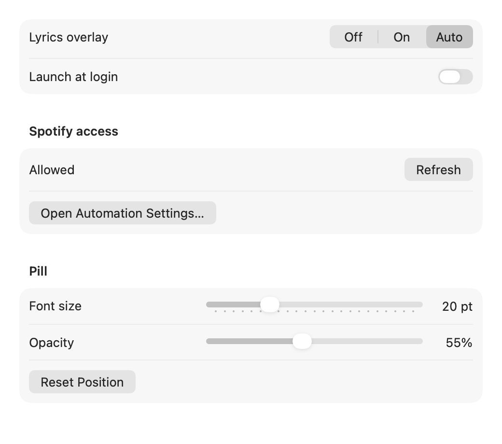
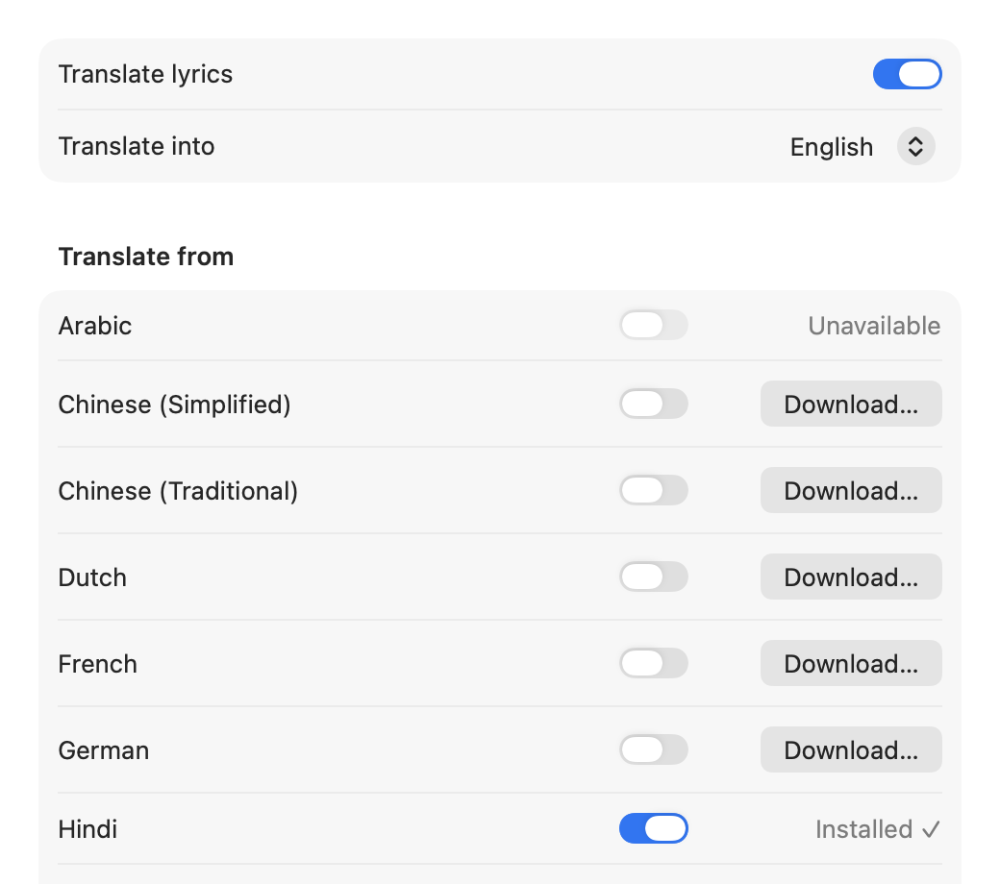
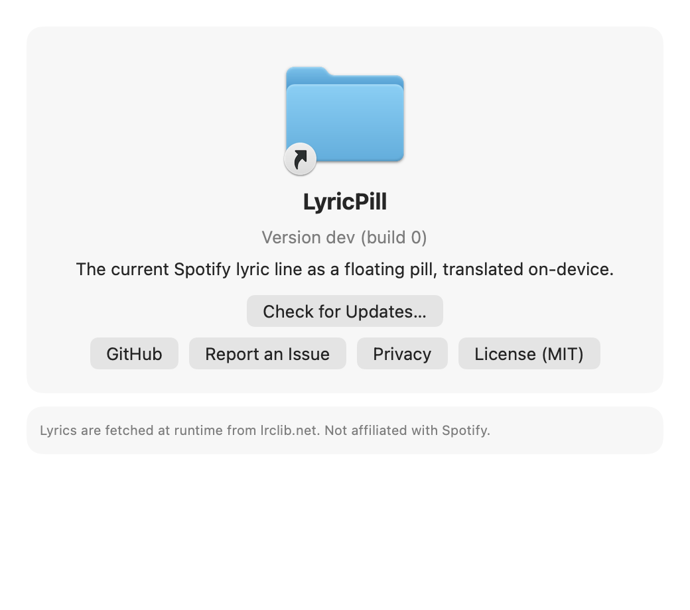

One lyric line,always on top.
A free macOS menu-bar app that floats the current Spotify lyric over whatever you’re doing, in time, and can translate it on your Mac.
00:00.00
Everything it shows you



The menu
Click the note in the menu bar for the status row, the three modes, Move Mode, translation and Settings.
Four switches
Show the line only while a song plays.
Paused: hidden, no timer armed. Playing: one timer, set for the next line.
Translate the line into English on this Mac.
Twenty languages, packs downloaded once from Settings, nothing sent anywhere.
Start LyricPill when you log in.
A standard login item, visible in System Settings.
Drag the pill anywhere you like.
Move Mode. The position is kept, per screen.
What it costs your Mac
0 ms
CPU while a song is paused
The app is 460 KB on disk and sits at 39 MB. It never polls: Spotify’s own notification wakes it, one timer is set for the next line, and nothing runs while a song is paused.
Install in a minute
First, drag it to Applications.
“LyricPill” was blocked to protect your Mac.
Open it from Privacy & Security. macOS asks once.
Then open it once from Privacy & Security.
“LyricPill” would like to control “Spotify”.
Reads the current track and playback position to display synced lyrics.
Then play a song and allow it to read Spotify.
Then the line is there.